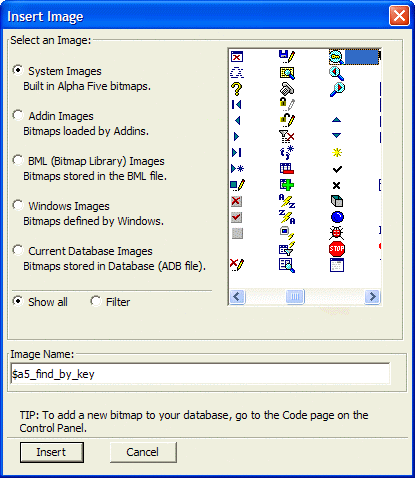

Insert Image Dialog Box
You can display the Insert Image dialog box at any time by running A5_PROMPT_FOR_IMAGENAME().
Click any of the five radio buttons at left to display a different group of available images.
- System Images - these built in Alpha Anywhere bitmaps will be found in all installations
- Addin Images - these images not be available in all installations. Their presence depends on which addins you have loaded at the installations.
- Bitmap Library Images - these images come from the alphabit.bml file, located in your program folder
- Windows Images - the images available will depend on the version of Windows that you are running.
- Current Database Images - you provide these images as Part of your application.

Optionally, click the Filter button to display the Filter field. Enter a value and the list of available images will change.
For example, the value fo entered in the Filter field will list all images whose names begin with "fo".
The value f*o will list all images whose names have "f" and "o" as the first and third characters.
The value fo? will list all images that have the "fo" sequence anywhere in their names.
Select an image by clicking on it.
Click Insert to continue or Cancel to discard your selection.